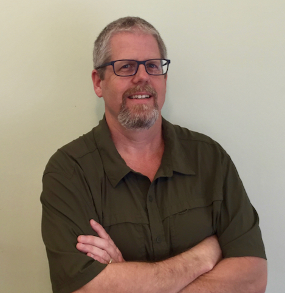

 I am an IT professional who loves solving problems through programming and team collaboration.
Programming has been a part of my life since first coding on a Commadore 64 as a teen. I moved on to learn Visual Basic by coding a graphical Scrabble game to play-by-email with family and friends.
I have been working with SQL, relational databases and Unix throughout my career. Now, I am excited about and embracing the challenges of learning web development.
In my free time my two teenage daughters, wife and I enjoy camping on the Washington and Oregon coasts. I also enjoy reading world and military history, Astronomy (both night sky and solar observing) and watching the Seahawks.